パロアルトネットワークスの次世代ファイアウォール技術を基に構築されたOCIクラウドネイティブのマネージド・ファイアウォール「OCI Network Firewall」が2022年7月にリリースされました。「OCI Network Firewall」はURLフィルタリングやTSL/SSL検査などの機能を提供します。 本チュートリアルでは、OCI Network Firewallを構築するの続編として、Network Firewallのログを分析し、Network Firewallを通過するトラフィックの傾向、脅威の有無を確認します。
Network Firewallのログの収集にはLoggingサービス、分析にはOCIが提供するログ分析サービス「Logging Analytics」を使用します。
Logging Analyticsでは、様々なOCIサービスのログ、Oracle製品のログに対応したログの解析文が用意されていますが、Network Firewallのログにはまだ対応していないので、本チュートリアルではNetwork Firewallのログに対応した解析文をカスタムで作成します。
通常はLoggingサービスで収集したログは「Service Connector Hub」と呼ばれるサービスを使用して、直接Logging Analyticsに連携することも可能です。しかし、今回はLoggingサービスから直接Logging Analyticsにログを転送してしまうと、カスタムで作成したログの解析文でログを読み取ることが出来なくなってしまうため、Loggingサービスのログを一度Object Storageに転送します。 Object Storageに格納されたログは、Logging Analyticsの「ObjectCollectionRule」と呼ばれるルールを作成することで、Logging Analyticsに転送されます。
所要時間 : 約60分
前提条件 :
- Logging Analyticsが有効化されていること
- OCIコンソールのメニューボタン→監視および管理→ログ・アナリティクス→ログ・エクスプローラを選択し、「ログ・アナリティクスの使用の開始」を選択することで、Logging Analyticsを有効化させることができます。

- ユーザーがLoggingサービスを使用するためのポリシーが作成されていること。ポリシーの詳細はドキュメントをご参照ください。
- ユーザーがLogging Analyticsを使用するためのポリシーが作成されていること。ポリシーの詳細はOCIのLogging AnalyticsでOCIの監査ログを可視化・分析するもしくは、ドキュメントをご参照ください。
- ユーザーがService Connectorを作成するためのポリシーが作成されていること。ポリシーの詳細はドキュメントをご参照ください。
- ユーザーがObject Storageのバケットを作成、管理するためのポリシーが作成されていること。ポリシーの詳細はドキュメントをご参照ください。
- OCIチュートリアルOCI Network Firewallを構築するを参考に、Network Firewallインスタンスの作成、コンピュートインスタンス（LinuxまたはWindows）の作成が終わっていること
- OCIチュートリアルOCI Network FirewallのIPS/IDS機能を検証するを参考に、侵入検知（IDS）もしくは侵入防止（IPS）のセキュリティ・ルールが設定されていること
- OCIチュートリアルコマンドライン(CLI)でOCIを操作するを参考に、OCI CLIコマンドのインストールと構成が終わっていること。
注意 :
- ※チュートリアル内の画面ショットについてはOracle Cloud Infrastructureの現在のコンソール画面と異なっている場合があります。
1. OCI Network Firewallのログの有効化
本手順では、Network Firewallインスタンスのログを有効化します。 Network Firewallでは、以下2種類のログを出力します。
- Traffic Log: Network Firewallインスタンスを通過したトラフィックを記録したログ。
- Threat Log: Network Firewallによって脅威が検知されたトラフィックの詳細情報（脅威の内容など）を記録したログ。
本チュートリアルでは、Traffic LogとThreat Logの両方を有効化し、分析します。
OCIチュートリアルOCI Network Firewallを構築するで作成したネットワーク・ファイアウォール詳細画面の左下の「リソース」から、「ログ」を選択します。 Threat Logの「無効」となっているボタンをクリックします。
表示された「ログの有効化」画面にて、以下項目を入力し、「ログの有効化」ボタンをクリックします。
コンパートメント- 任意ログ・グループ- 「新規ログ・グループの作成」を選択ログ・グループ名- 任意 例）NFW_LOGログ名- 任意ログの保持- 任意
同様にTraffic Logも有効化します。
コンパートメント- 任意ログ・グループ- Threat Log有効化時に作成したログ・グループを選択ログ名- 任意ログの保持- 任意
2. Object Storageの作成
OCI Network Firewallのログを格納するObject Storageを作成します。 Object Storageに格納されているログは、Logging Analyticsの「ObjectCollectionRule」と呼ばれる仕組みにより、Logging Analyticsに転送することができます。 「ObjectCollectionRule」では、1つのObject Storageのバケットに対して1つのルールしか作成できないため、今回はNetwork Firewall Threat Logを格納するObject Storageと、Network Firewall Traffic Logを格納するObject Storageの合計2つのバケットを作成します。
OCIコンソール画面左上のメニュー → ストレージ → オブジェクト・ストレージとアーカイブ・ストレージ → バケット → 「バケットの作成」ボタンをクリックします。 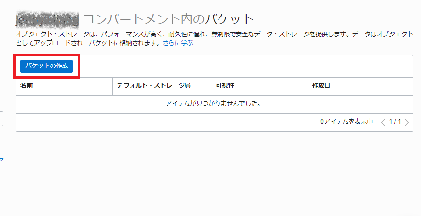
表示された「バケットの作成」画面にて、任意のバケット名を入力し、「作成」ボタンをクリックします。
バケット名- 任意 例）ThreatLogBucketデフォルト・ストレージ層- 「標準」を選択 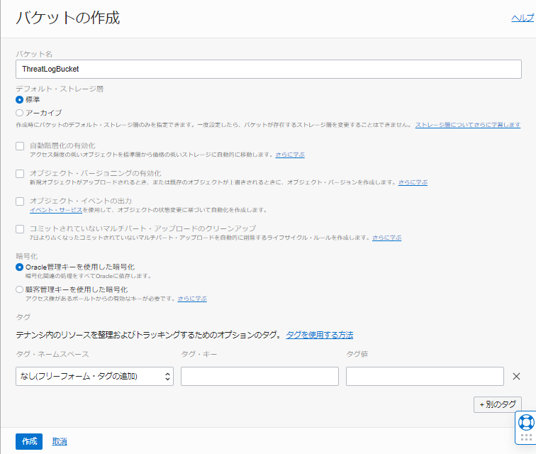
同様の手順で、Network Firewall Traffic Logを格納する用のバケットをもう一つ作成します。

以上で、Object Storageの作成は完了です。
3. Service Connectorの作成
Service Connector Hubというサービスを使用して、Loggingサービスに保管されているOCI Network Firewallのログを、手順2で作成したObject Storageに転送します。
OCIコンソール画面左上のメニュー → 監視および管理 → ロギング → サービス・コネクタ → 「サービス・コネクタ」の作成ボタンをクリックします。
表示された「サービス・コネクタの作成」画面にて、以下項目を入力し、「作成」ボタンをクリックします。
コネクタ名- 任意 例）NFWTrafficLog Connector説明- 任意 例）OCI Network Firewallログの転送リソース・コンパートメント- Network Firewallのログが保管されているLoggingサービスのコンパートメントを選択ソース- ロギングターゲット- オブジェクト・ストレージ
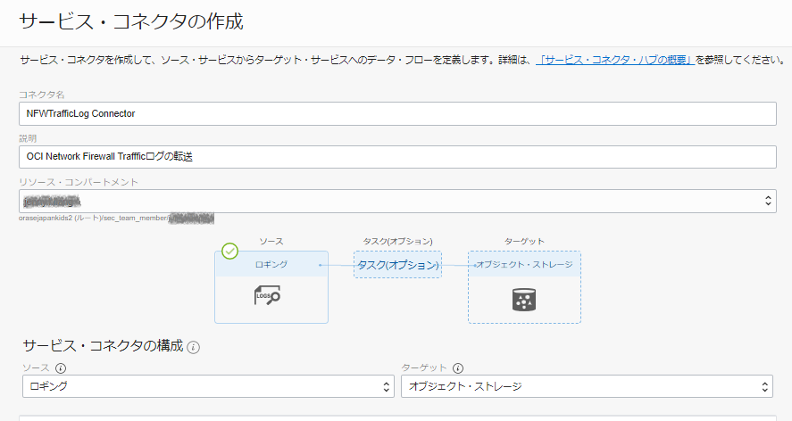
ソースの構成
ログ・グループ- 手順1で作成したLoggingサービスのログ・グループを選択ログ- 手順1で有効化したOCI Network FirewallのTrafficログを選択
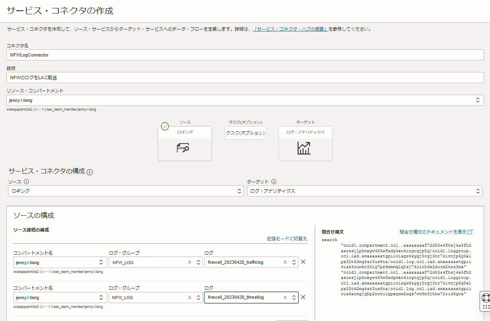
ターゲットの構成
コンパートメント- 手順2でObject Storageを作成したコンパートメントを選択バケット- 手順2で作成したNetwork Firewall Trafficログが格納されているObject Storageのバケットを選択- このサービス・コネクタによるコンパートメント○○のオブジェクト・ストレージへの書き込みを許可するデフォルト・ポリシーを作成します の「作成」ボタンをクリック 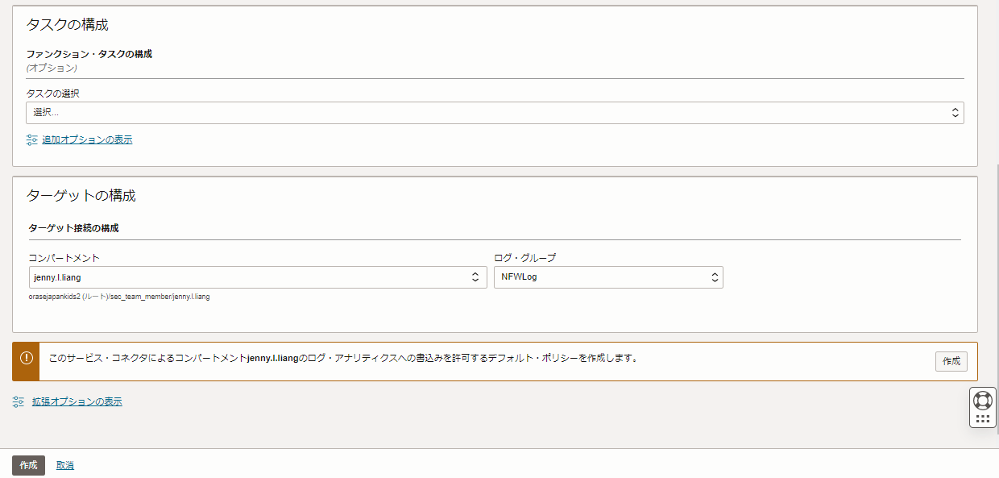
以上で1つ目のService Connectorの作成は完了です。
同様の手順で、Network Firewall ThreatログをObject Storageに転送するService Connectorを作成します。
コネクタ名- 任意 例）NFWThreatLog Connector説明- 任意 例）OCI Network Firewall Threatログの転送リソース・コンパートメント- Network Firewallのログが保管されているLoggingサービスのコンパートメントを選択ソース- ロギングターゲット- オブジェクト・ストレージ
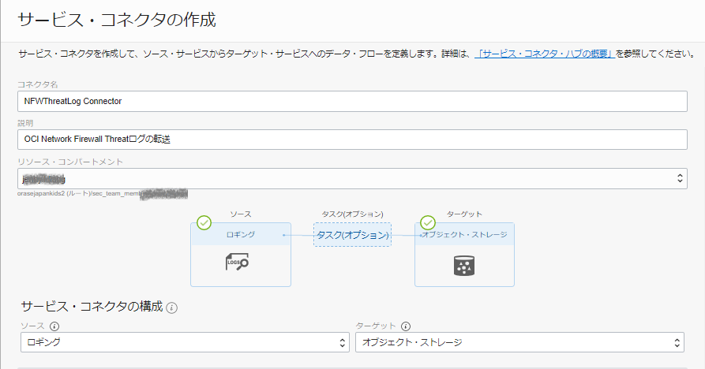
ソースの構成
ログ・グループ- 手順1で作成したLoggingサービスのログ・グループを選択ログ- 手順1で有効化したOCI Network FirewallのThreatログを選択
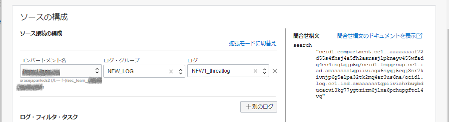
ターゲットの構成
コンパートメント- 手順2でObject Storageを作成したコンパートメントを選択バケット- 手順2で作成したNetwork Firewall Threatログが格納されているObject Storageのバケットを選択
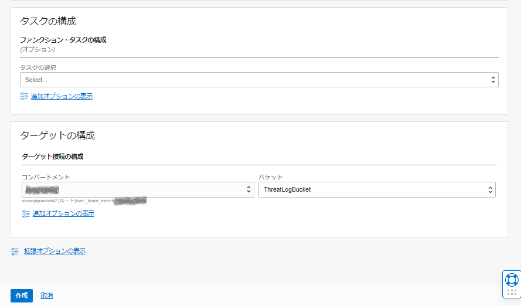
以上で、Service Connectorの作成は完了です。 指定したLoggingサービスのログが、指定されたObject Storageのバケットに転送されるようになります。
データの転送状況などは、作成したサービス・コネクタ詳細画面左下のリソース → 「メトリック」からご確認いただくことが可能です。
4. OCI Network Firewallのログ・ソース、ダッシュボード定義のインポート
Logging Analyticsでは通常200種類以上のログに対応したログ・ソースとログ・パーサーが定義されています。万が一、分析したいログのログ・ソースが事前に定義されていない場合、ユーザーがカスタムでログ・ソースやログ・パーサーを定義することができます。 ログ・パーサーやログ・ソースはOCIのコンソールから作成することができます。
また、ユーザーがカスタムで作成したログの解析文（パーサー）等の定義をエクスポートし、別のテナンシやコンパートメントにインポートすることができます。 本チュートリアルでは、ユーザーがカスタムで予め作成したログ・ソース、ログ・パーサー、フィールド、ダッシュボードの定義をエクスポートしたzipファイルを、各自環境にインポートする手順でログ・ソースを取り込みます。
ログ・ソースとログ・パーサーはUI上から定義をインポートすることができますが、ダッシュボード定義はAPI経由でインポートする必要があるため、本手順ではOCIコンソールからログ・ソースをインポートしますが、ダッシュボード定義はOCI CLIコマンドを使用してインポートします。
※ログの出力フォーマットは変更する可能性があります。GitHub上にあるログ・ソースは2022年11月15日時点のNetwork Firewall各種ログに対応したものになります。
4-1. ログ・ソースとログ・パーサーのインポート
OCI Network Firewallログのログ・ソース、ログ・パーサーは以下GitHubからダウンロードいただけます。
各ログのログ・ソースファイルをダウンロードしたら、OCIコンソール画面からファイルをインポートします。 OCIコンソール画面左上のメニュー → 監視および管理 → ログ・アナリティクス → 管理 → 「構成コンテンツのインポート」をクリックします。

表示された「構成コンテンツのインポート」画面にて、先程ダウンロードしたzipファイルの1つを選択し、「インポート」ボタンをクリックします。

画面右上に「構成コンテンツ・ファイル～～のインポートに成功しました。」のメッセージが表示されます。
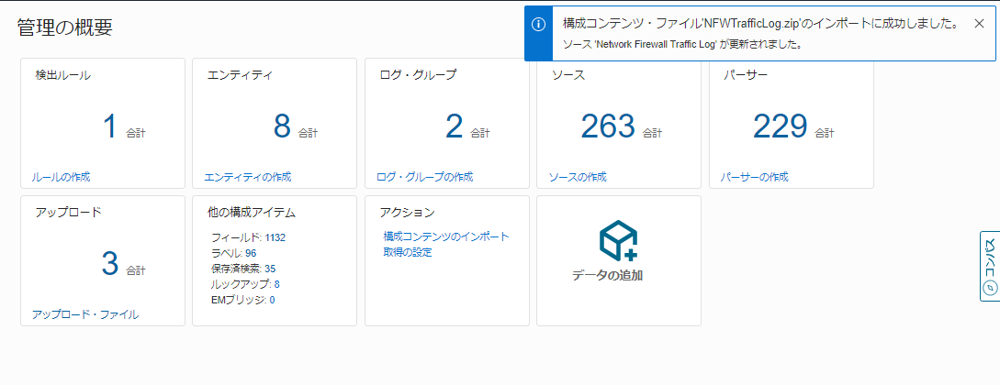
同様の手順で、ダウンロードしたもう1つのzipファイルをインポートします。 ソースに、「Network Firewall Threat Log」と「Network Firewll Traffic Log」の2つが作成されていることを確認します。
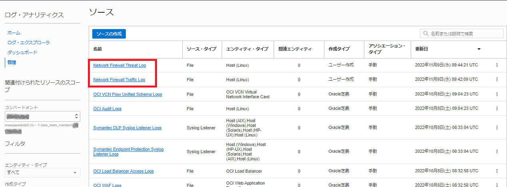
4-2. ダッシュボード定義のインポート
OCI Network Firewallログのダッシュボード定義ファイルは以下GitHubにあります。 ダッシュボード定義ファイルはインポートする前に、中身を一部修正する必要がありますので、中身をコピーしてローカルのエディタなどに貼りつけてください。
OCIコンソール画面左上のメニュー → アイデンティティとセキュリティ → アイデンティティ → コンパートメントを選択します。 ダッシュボード定義をインポートしたいコンパートメントのOCIDをクリックボードにコピーします。
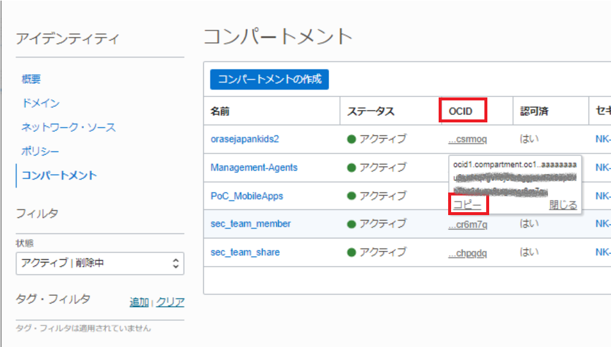
コピーしたダッシュボード定義ファイルをvim等で開き、4行目の”compartment-id”を自身の環境でダッシュボードをインストールしたいコンパートメントのOCIDに書き換えます。
{
"dashboards": [
{
"compartment-id": "<ご自身のコンパートメントOCID>",
"dashboard-id": "ocid1.managementdashboard.oc1..aaaaaaaamxg6zlyjeuqgqmmj5kk5gaarskcwdkewxwwts5j7vb5lszjyw33q",
"data-config": [],
"defined-tags": {},
JSONファイルを修正し、保存したら以下コマンドでダッシュボード定義をインポートします。
oci management-dashboard dashboard import --from-json file://<ダッシュボード定義ファイルのパス>/NFWdashboard.json
OCIコンソール画面左上のメニュー → 監視および管理 → ログ・アナリティクス → ダッシュボードにて、「OCI Network Firewall Dashboard」が作成されていることを確認します。
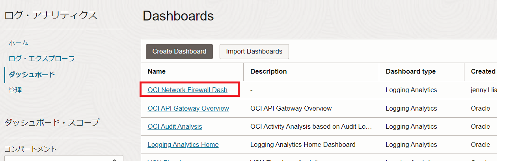
5. ログ・グループの作成
Object Storageに格納されているログをLogging Analyticsに転送する前に、転送先となるLogging Analyticsの「ログ・グループ」を作成します。
OCIコンソール画面左上のメニュー → 監視および管理 → ログ・アナリティクス → 管理 → ログ・グループ → 「ログ・グループの作成」ボタンをクリックします。
表示された「ログ・グループの作成」画面にて、任意のログ・グループ名を入力し、「作成」ボタンをクリックします。
6. ObjectCollectionRuleの作成
Logging AnalyticsのObjectCollectionRuleはOCI CLIなどのAPIコマンドで作成する必要があります。 本手順ではOCI CLIコマンドを使用して、ObjectCollectionRuleを作成します。
6-1. ObjectCollectionRuleの作成に必要な情報収集
ObjectCollectionRuleを作成する際に必要となる各情報を収集します。
- ルールを作成するコンパートメントのOCID
- Logging Analyticsのログ・グループのOCID
- Logging Analyticsのネームスペース
- ログが格納されているObject Storageのバケット名
- ログが格納されているObject Storageのネームスペース
ルールを作成するコンパートメントのOCID
OCIコンソール画面左上のメニュー → アイデンティティとセキュリティ → アイデンティティ → コンパートメントを選択します。 ダッシュボード定義をインポートしたいコンパートメントのOCIDをコピーし、メモ帳などにメモします。
Logging Analyticsのログ・グループのOCID
Logging Analyticsのログ・グループを作成します。 OCIコンソール画面左上のメニュー → 監視および管理 → ログ・アナリティクス → 管理 → ログ・グループ → 手順5で作成したログ・グループを選択します。
ログ・グループの詳細画面にて、ログ・グループのOCIDをコピーし、メモ帳などにメモします。

Logging Analyticsのネームスペース
Logging Analyticsのログ・グループを作成します。 OCIコンソール画面左上のメニュー → 監視および管理 → ログ・アナリティクス → 管理を選択します。
 管理画面左下のリソースから、「サービス詳細」をクリックします。
管理画面左下のリソースから、「サービス詳細」をクリックします。

サービス詳細画面の「サービス・ネームスペース」をメモ帳などにメモします。
ログが格納されているObject Storageのバケット名 ログが格納されているObject Storageのネームスペース
OCIコンソール画面左上のメニュー → ストレージ → オブジェクト・ストレージとアーカイブ・ストレージ → バケット → 手順2で作成したObject Storageのバケットを選択します。 バケットの詳細画面にて、バケット名とネームスペースをメモします。

6-2. ObjectCollectionRuleの作成
以下コマンドを実行して、ObjectCollectionRuleを作成します。
Network Firewall Traffic ログ
oci log-analytics object-collection-rule create --compartment-id <コンパートメントOCID> --log-group-id <Logging AnalyticsのロググループID> --log-source-name "Network Firewall Traffic Log" --name <任意のルール名> --namespace-name <Logging Analyticsのネームスペース> --os-bucket-name <Network Firewall Traffic Logが格納されているObject Storageのバケット名> --os-namespace <Object Storageのネームスペース>
Network Firewall Threat ログ
oci log-analytics object-collection-rule create --compartment-id <コンパートメントOCID> --log-group-id <Logging AnalyticsのロググループID> --log-source-name "Network Firewall Threat Log" --name <任意のルール名> --namespace-name <Logging Analyticsのネームスペース> --os-bucket-name <Network Firewall Threat Logが格納されているObject Storageのバケット名> --os-namespace <Object Storageのネームスペース>
以上でObjectCollectionRuleの作成は完了です。 少し待つとObjectCollectionRuleによって、指定されたObject Storageのバケット内のログがLogging Analyticsに転送されていることが確認できます。
OCIコンソール画面左上のメニュー → 監視および管理 → ログ・アナリティクス → ログ・エクスプローラにて、Network Firewall Threat LogとNetwork Firewall Traffic Logが表示されていたら、ObjectCollectionRuleは正常に動作しています。
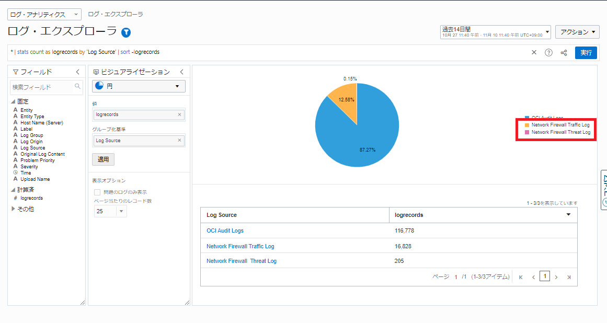
7. ログの分析
OCIコンソール画面左上のメニュー → 監視および管理 → ログ・アナリティクス → ログ・エクスプローラーにて、「Network Firewall Traffic Log」をクリックすると、Network Firewall Traffic Logが一覧で表示されます。
一覧で表示されたログコンテンツを更に拡張表示し、ログの解析文（ログ・パーサー）によってログの中身のフィールドが識別されていることを確認します。
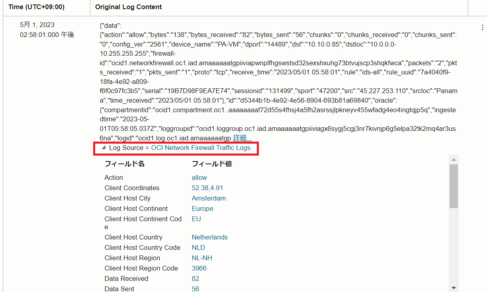
解析文によって定義されている「フィールド」に基づいて、ログを可視化、分析することが出来ます。
7-1. Network Firewallへのアクセス元地域を世界地図で表示する（例1）
ビジュアライゼーションメニューのドロップダウンボックスをクリックし、地球儀のマークを選択します。
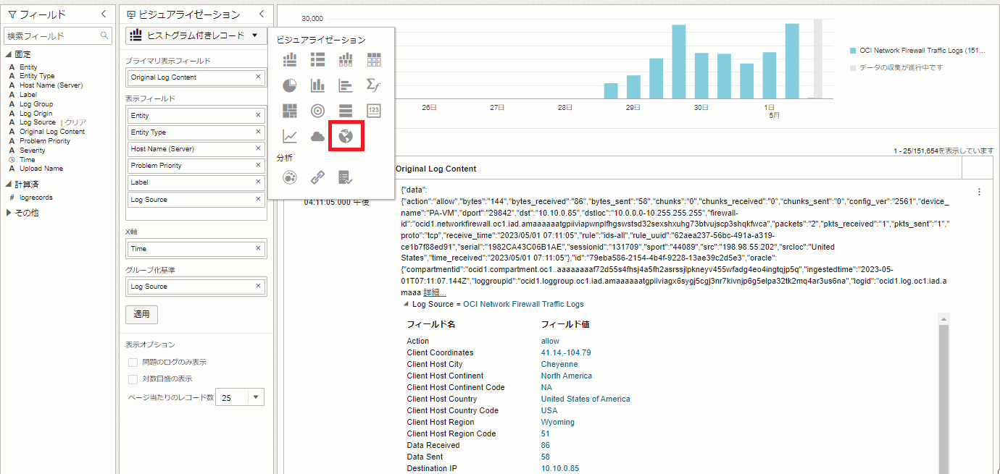
Network Firewall インスタンスへのアクセス元のクライアント情報を基に、世界地図上でどの国からアクセスがあったかを確認することができます。
世界地図下に表示されているリストで、「logrecords」の隣の▼をクリックすると、リストをログレコード数の昇順/降順表示に切り替えることができます。 以下スクリーンショットでは、オランダからのアクセスが最も多いことが分かります。
また、ログ・エクスプローラー画面左の「フィールド」から、「Log Source」を選択し、使用可能なログソース一覧を表示します。その中から、「Network Firewall Traffic Log」のチェックを外し、「Network Firewall Threat Log」にチェックをいれて「適用」ボタンをクリックします。
Network Firewallを通過したトラフィックのうち、脅威が検出されたアクセスのクライアント情報に基づき、脅威のアクセス元を確認することができます。
7-2. 脅威の重要度を可視化する（例2）
Network Firewall Threat Logには検出された脅威の重要度が出力されます。Network FirewallのSeverityは以下の5種類があります。
- Informational
- Low
- Medium
- High
- Critical
ログ・エクスプローラー画面左のフィールドから、「Severity」を選択すると各重要度の脅威がどれくらい検出されているかを確認することができます。
スクリーンショットではSeverityが「Medium」のログが147件出力されていることが分かります。
Severityは”Critical”のものが一番緊急度が高いものとされているので、”Critical”のログが出力されていないか、Network Firewall Threat Logを定期的に監視するのも有効です。 必要に応じて”Critical”のログが出力されたらアラートを受け取ることも可能です。Logging Analyticsでアラートを生成する手順についてはドキュメントをご参照ください。
7-3. ダッシュボードを利用する（例3）
OCIコンソール画面左上のメニュー → 監視および管理 → ログ・アナリティクス → ダッシュボードを選択し、手順4-2でインポートしたダッシュボードを選択します。
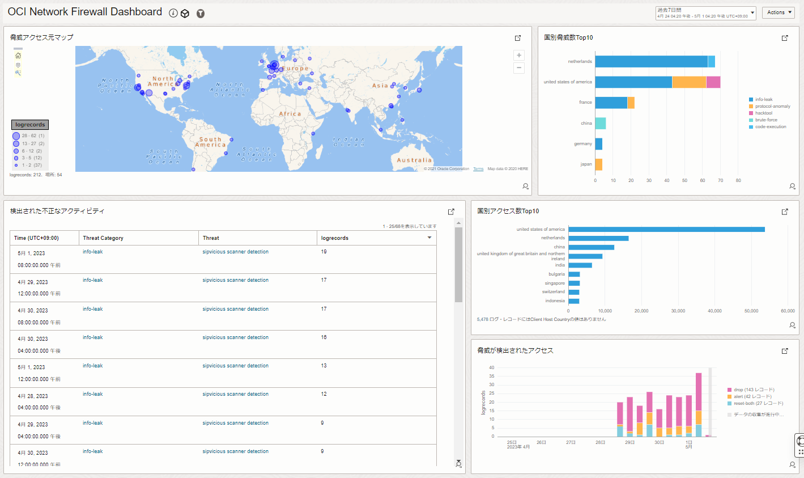
以下のようなダッシュボードが表示されます。

- 脅威アクセス元マップ
脅威が検出された「Network Firewall Threat Log」のクライアント情報を基に、世界地図で脅威のアクセス元を確認することができます。
- 国別脅威数Top10
脅威が検出された「Network Firewall Threat Log」のクライアント情報を基に、脅威のアクセス元となっている各国における脅威の種類を示しています。 アメリカからの脅威では、”info-leak”（情報漏洩）の脅威が100%を占めていることが分かります。
- 検出された不正なアクティビティ
検出された脅威の種類と、各脅威が何回検出されたかを確認することができます。
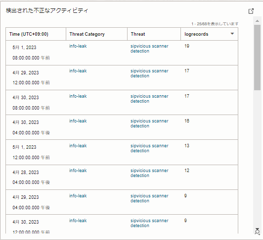
- 脅威が検出されたアクセス
脅威が検出されたアクセス（Network Firewall Threat Log）の出力数の傾向を確認することができます。特定の時間帯で突然出力数が増えているなど、傾向の異常の確認にお役立ていただけます。

- 国別アクセス数Top10
最も脅威が検出された回数が多いアクセス元の国の上位10を確認することができます。
また、必要に応じてダッシュボードの中身は編集することができます。 ログ・エクスプローラーにてダッシュボードに追加したい検索結果を表示し、画面左上の「アクション」→ 「名前をつけて保存」をクリックします。
「検索の保存」画面にて、任意の検索名を入力し「ダッシュボードに追加」にチェックを入れます。 追加先のダッシュボードを選択し、「保存」することで既存のダッシュボードに新しいビューを追加することができます。
また、ダッシュボード画面の左上の「Action」から、「Edit」を選択することで、ダッシュボードの中身のウィジェットを削除したり、位置を編集することも可能です。
必要に応じて、「Actions」から「Print」を選択することで、ダッシュボードをPDFに出力することもできます。
8. 補足
8-1. Service Connectorの非アクティブ化、削除方法について
手順3で作成したService ConnectorはOCIコンソール上から、非アクティブ化することができます。非アクティブ化することで、Loggingサービスから指定されたObject Object Storageへのログの転送をとめることが可能です。
非アクティブ化は、作成したService Connectorの詳細画面の上部にある「非アクティブ化」ボタンをクリックすることで実現可能です。
また、Service Connectorの詳細画面の上部の「削除」ボタンをクリックすることで、Service Connectorを削除することができます。
8-2. ObjectCollectionRuleの削除方法について
手順6で作成したObjectCollectionRuleは、APIで削除することができます。 OCI CLIコマンドを使用した、ObjectCollectionRuleの削除方法は、ドキュメントをご参照ください。 ObjectCollectionRuleの削除時に必要になる、ObjectCollectionRuleのOCIDについては、Object-collection-rule listコマンドでご確認いただけます。
以上でLogging AnalyticsでＮetwork Ｆirewallのログ分析は終了です。 手順7で紹介した方法以外にも、様々な可視化オプションを用いてログを可視化したり分析することが可能ですので、是非実際に触ってみてください。